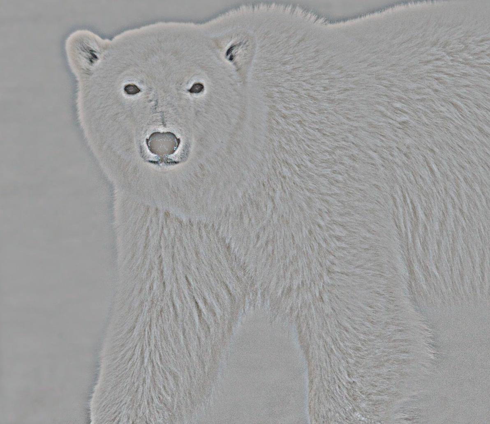
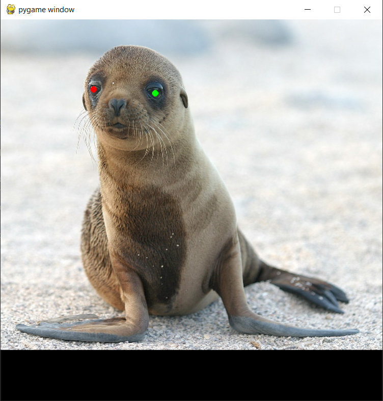
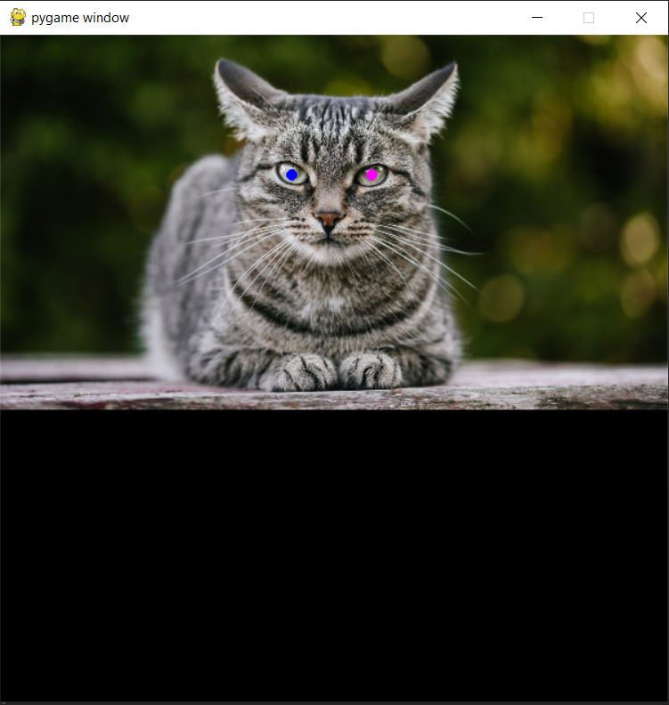
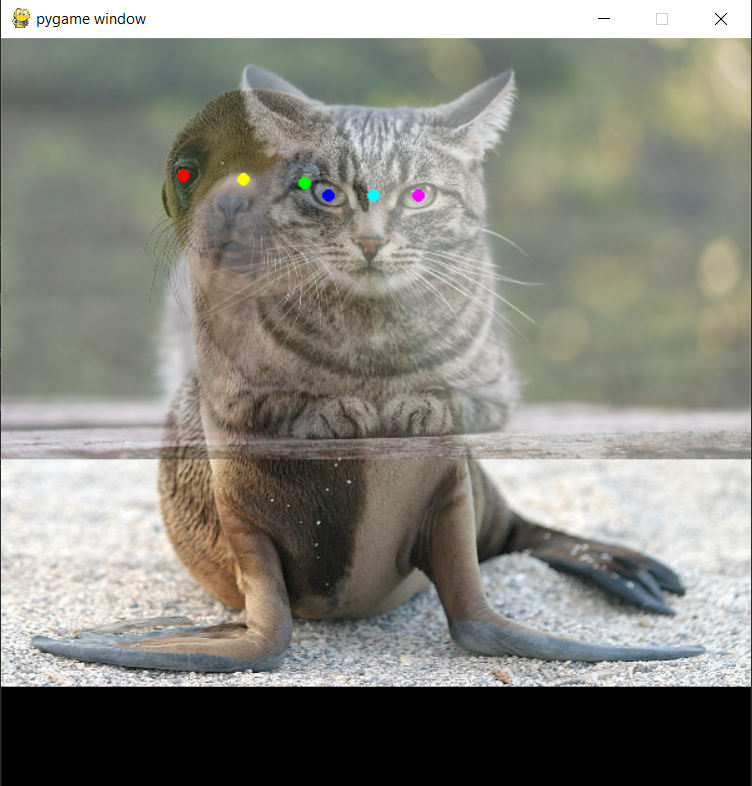
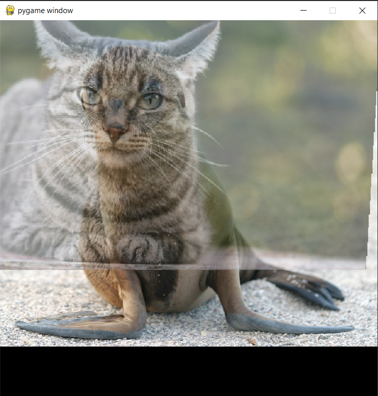

CSCI 3907: Computation Photography - Project 2: Hybrid Images
Team Members
- Jack Umina
- Graham Schock
- Jonathan Lee
Background
Hybrid images are static images composed of different frequencies of its input images. This gives an illusion of different images depending on the distance the viewer views the image at. The idea is that at close distances, the high frequency elements of an image are clear and distinct. Once the viewer moves away from the image, less and less high frequency components remain and the viewer is only able to make out the lower frequency portions. Hybrid images combine each of these elements from two different photos to create a combination of the two in the ouput. The approach used in this project is described in the SIGGRAPH 2006 paper by Oliva, Torralba, and Schyns.
Main Algorithm
The main idea of the hybrid image alogorithm is to first apply a low pass filter over the first image. This has the effect of bluring the first input image. Next, the second input filter's image matrix is subtracted by the same images result after have the low pass filter applied. This yields the second input image with a high pass filter applied. The effect here is the second image's high frequency features are maintained. Finally, the low pass filtered image is averaged with the high pass filtered image to yield the hybrid image.
Low Pass Filter
low_pass_image = sk.filters.gaussian(img, sigma=sigma, multichannel=True)The actual implementation of the low pass filter is a guassian blur with a varying sigma. We implemented it such that the sigma coult be changed with each image pairs. Through our experimentation, it was helpful to adjust the sigma depending on each input image. Some images required a smaller sigma to reduce the amount of blue applied so that its features were more easily reconizable in the final hybrid image.
High Pass Filter
high_pass_image = original_image - apply_low_pass_fltr(img, sigma=sigma)The implementation of the high pass filter is taking the original image and subtracting it by the low pass image. This has an effect of producing an image with only the high frequency regions remaining. Similar to the low pass filter, we also found it helpful here to adjust the sigma on a case by case basis. A higher sigma will increase the blur and result in more distinct features in the result of the high pass filter.
Frequency Analysis
Here we look at the log magnitude of the Fourier transform on each of image of the process. Something particularly interesting is how the low pass filter affects the frequency graph by blurring the input image.
| Input Image 1 | Input 1 with low pass filter | Input Image 2 | Input 2 with high pass filter | Hybrid Image |
|---|---|---|---|---|
 |
 |
 |
||
 |
 |
 |
Result Comparisons
| Input Image 1 | Input 1 with low pass filter | Input Image 2 | Input 2 with high pass filter | Hybrid Image |
|---|---|---|---|---|
 |
||||
|
 |
 |
||
|
|
|
||
|  |  |
|||
 |
 |
Automatic Video Generation
Having a user squint their eyes to be able to visualize a low pass filter is not user friendly.
We decided to implement automatic video generation that would allow the user to see how an image would change if we view the high frequency vs the low frequency.
Implementation
To make an image look smaller, while keeping the important data and proportions we decided to use different levels of jpeg compression.
We use the imagemagik library to compress a hybrid image by a certain percentage to get 80 frames of gradual image compression.
After we compress we want to add padding around the image so that all frames are the same size so we can eventually combine them into a video. We decided to center the image in the frame and fill the rest with black pixels.
After we generate all of the frames we would then combine them into a .gif file with a small delay between each frame and adding more time to the first and last frame so that the user can see the difference between the high pass and the low pass filters.
def generate_frame(compression_percent, img1, img2):
hybrid_img = hybrid(img1, img2)
compress_hybrid = compress(compression_percentage), hybrid_img) # ImageMagick function to compress an image by a certain percentage
return add_padding(compress_hybrid, sizeof(hybrid_img)) # Add padding so that all of the frames are the same size
for i in range(20, 100):
image_arr.push(generate_frame(i, img1, img2)
Results


Auto Alignment GUI
One tedious part of creating good hybrid images is aligning two images so features match. For example, we might want to align the eyes of two animals. We would typically use Photoshop or GIMP to manually translate, rotate, and scale the images. We decided to implement a GUI that would automatically transform two (user inputted) reference points on two images. We decided to align 2 points, rather than 3, because we can preserve the aspect ratio of both images without distorting them. The result is shown below. The input images should have the low/high pass filters applied already, but for this example, two raw, uncropped images are used.

The Program
The GUI is implemented in Pygame because it supports many of the features we need, such as displaying images and supporting user input events. A global data structure is used to store the GUI state, such as how many times the user has clicked, where they have clicked, and what image is currently displayed.
The Alignment Algorithm
- Display the first image. Allow the user to click on two points.

Display the second image. Allow the user to click on two points.

Translate the second image
- Calculate the midpoints between each set of reference points.

- Translate the second image so the midpoint overlaps with the midpoint of the first image.
Rotate the second image
- Calculate the slope of both sets of points, and calculate the angle between them.
- Rotate the second image by the negative angle in degrees.
Scale the second image
- Calculate the distance between both points in both images and calculate the scaling factor.
- Scale the second image by the scaling factor.
Display the first image with the transformed second image.
